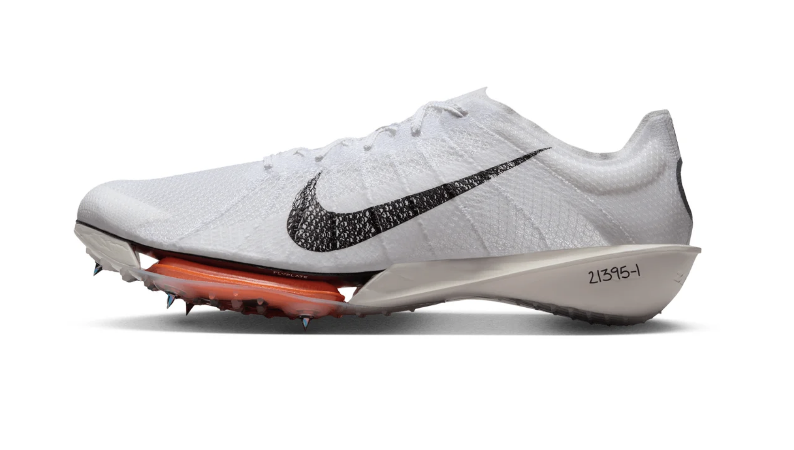
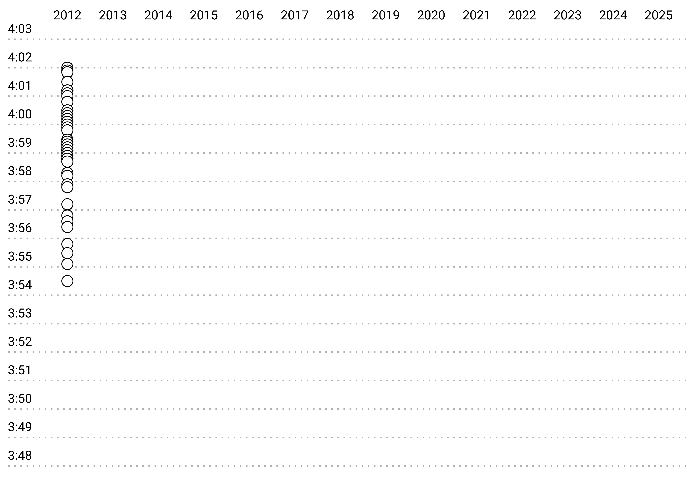
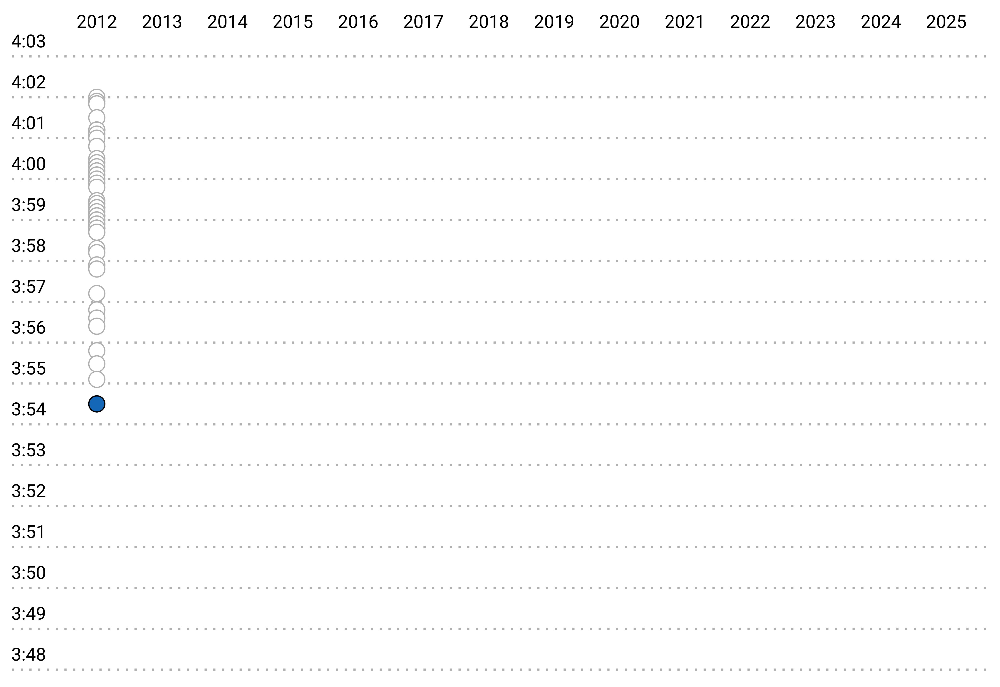
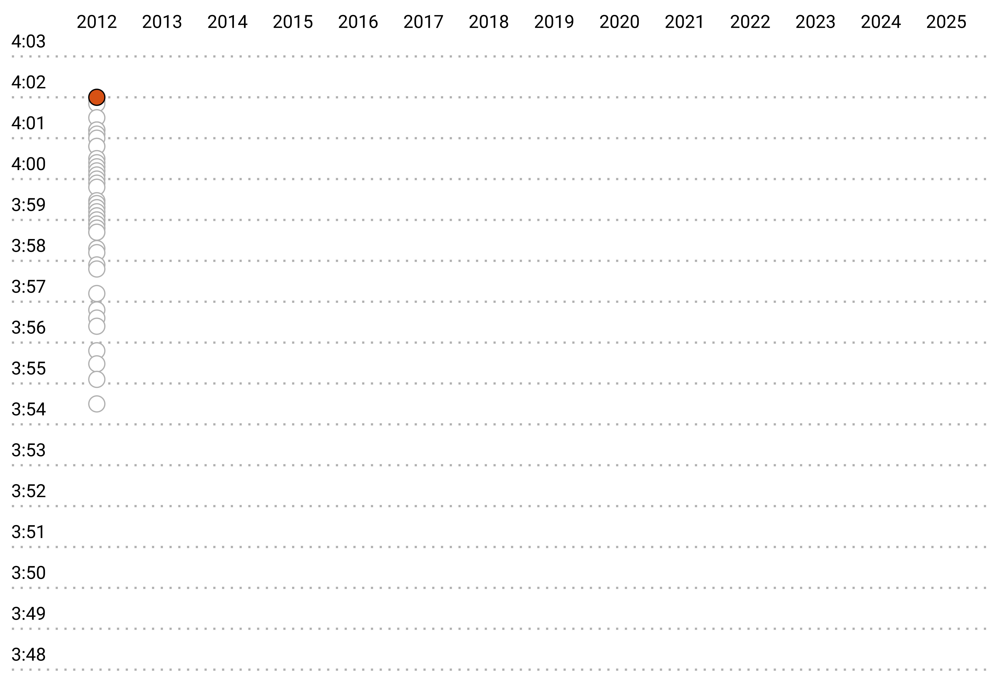
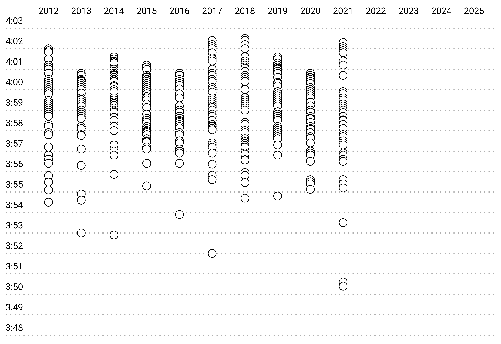
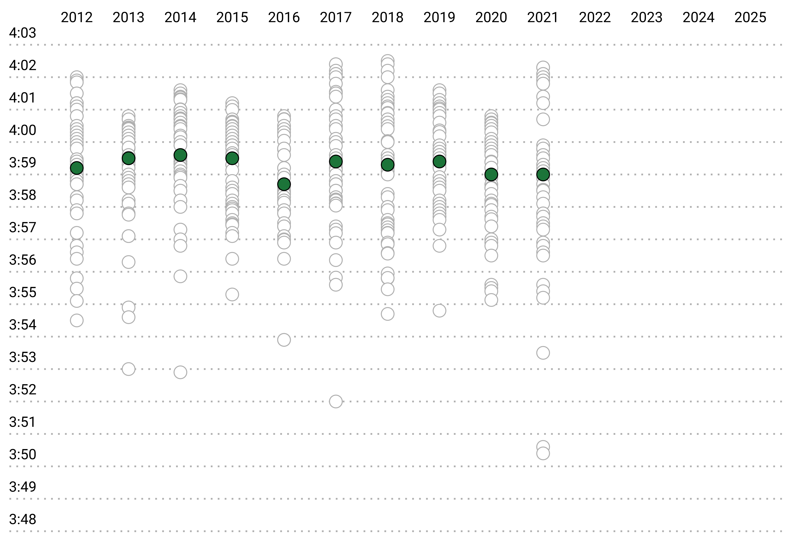
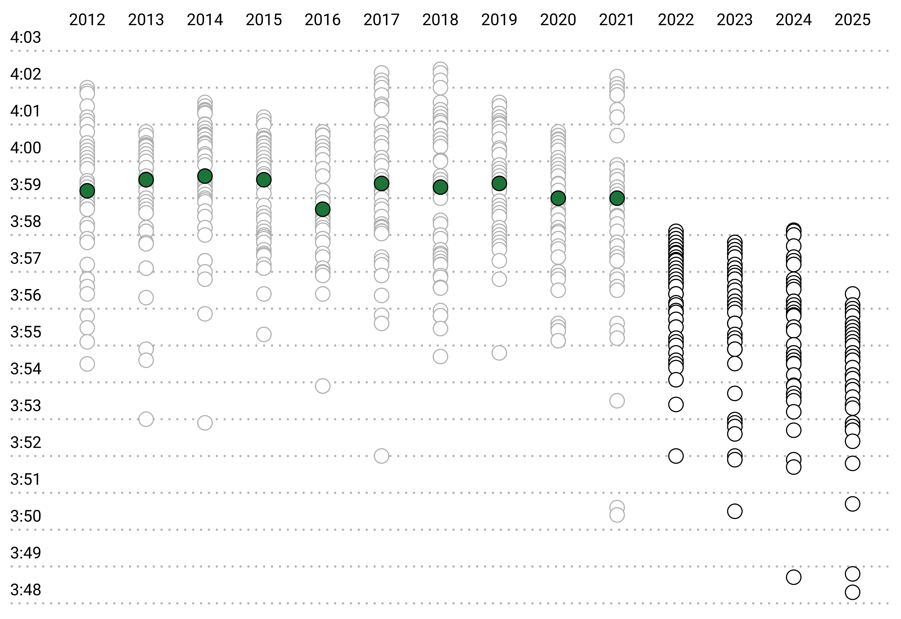
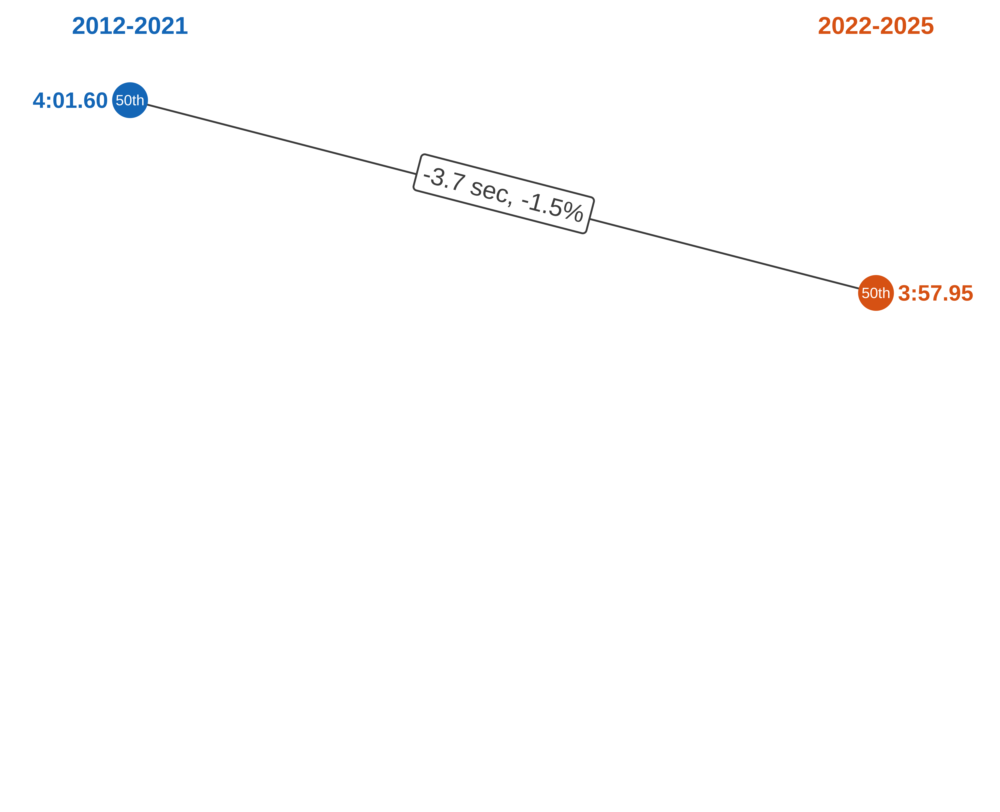
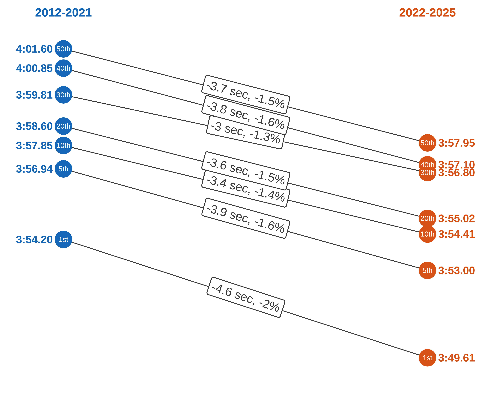

The Super Spike Era: How Shoes Are Redefining the NCAA Mile
The Super Spike Era: How Shoes Are Redefining the NCAA Mile
By Tim Fulton
On February 1, 2025, University of North Carolina senior Ethan Strand ran a 3:48.32 mile. Strand’s performance set a new collegiate record and was the third-fastest indoor mile ever. Just a few years earlier, a performance like this from a collegian would have been unthinkable. However, in 2022, multiple shoe manufacturers released “super spikes”, enabling milers to run faster than ever before.
To understand the impact of super spikes, let’s look at the 50 fastest mile performances from 2012 to 2025, starting with 2012. Each circle represents the fastest mile time of a unique athlete during the year.
From the runner with the fastest mile…
…to the runner with the 50th fastest.
From 2012 to 2021, the range of mile times remained fairly consistent year after year.
During this period, the median time hovered around 3:59.
Then, when super spikes became widely available in 2022, athletes began running significantly faster. The shoes had such a profound impact that the top 50 performances each year from 2022 to 2025 were all faster than the median performances from the previous decade.
Just how much faster do super shoes make someone? Let’s first look at the 50th fastest performances.
From 2012 to 2021 the median 50th fastest time was 4:01.60.
From 2022 to 2025 the median 50th fastest time was to 3:57.95, a 3.7 second drop, or 1.5% improvement.
This pattern of improvement is consistent across other ranks, with an overall improvement of 3.7 seconds, or 1.5%.
NCAA milers are faster than ever before, and yes, it’s the shoes. But it sure is fun to watch.








